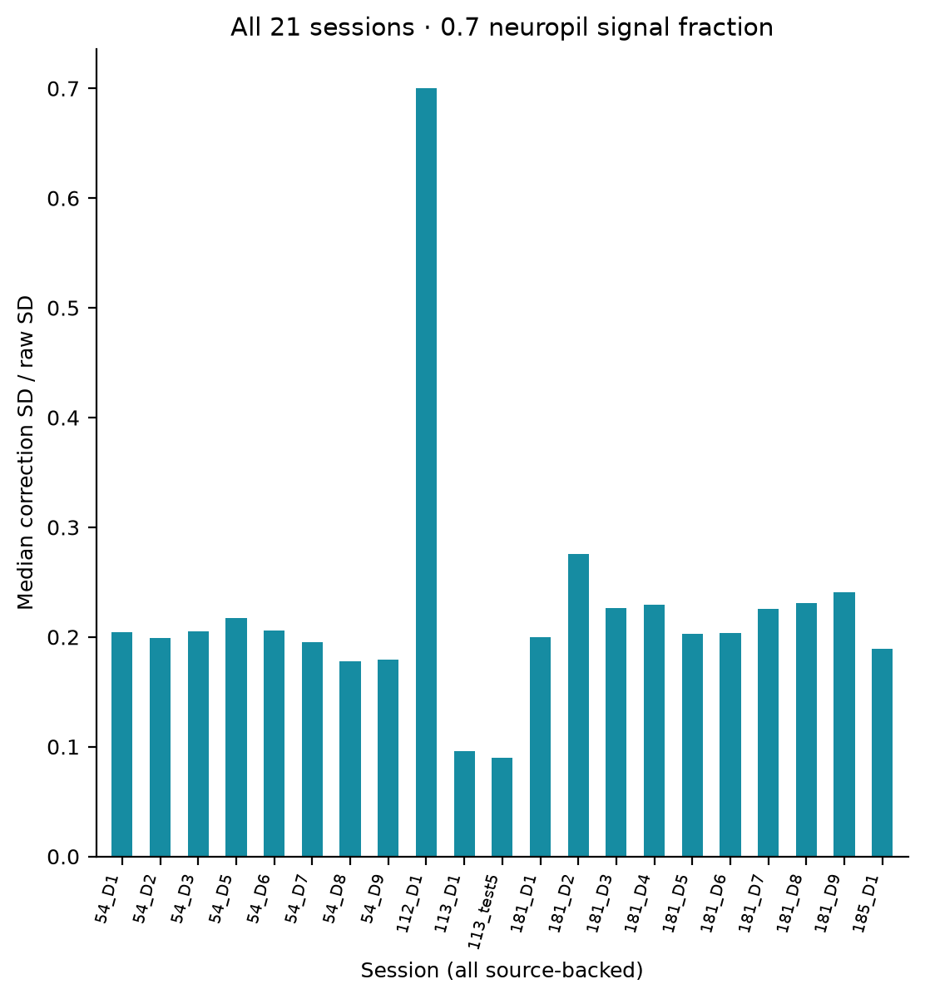
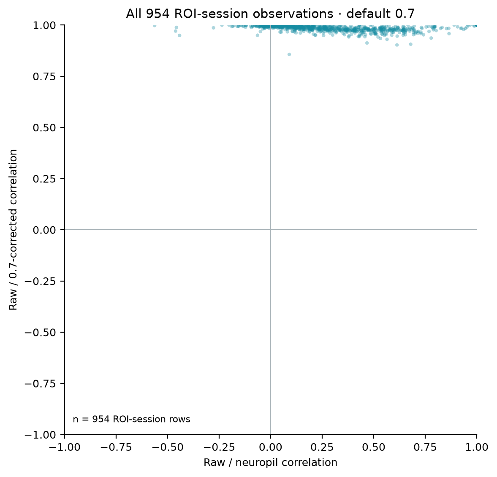
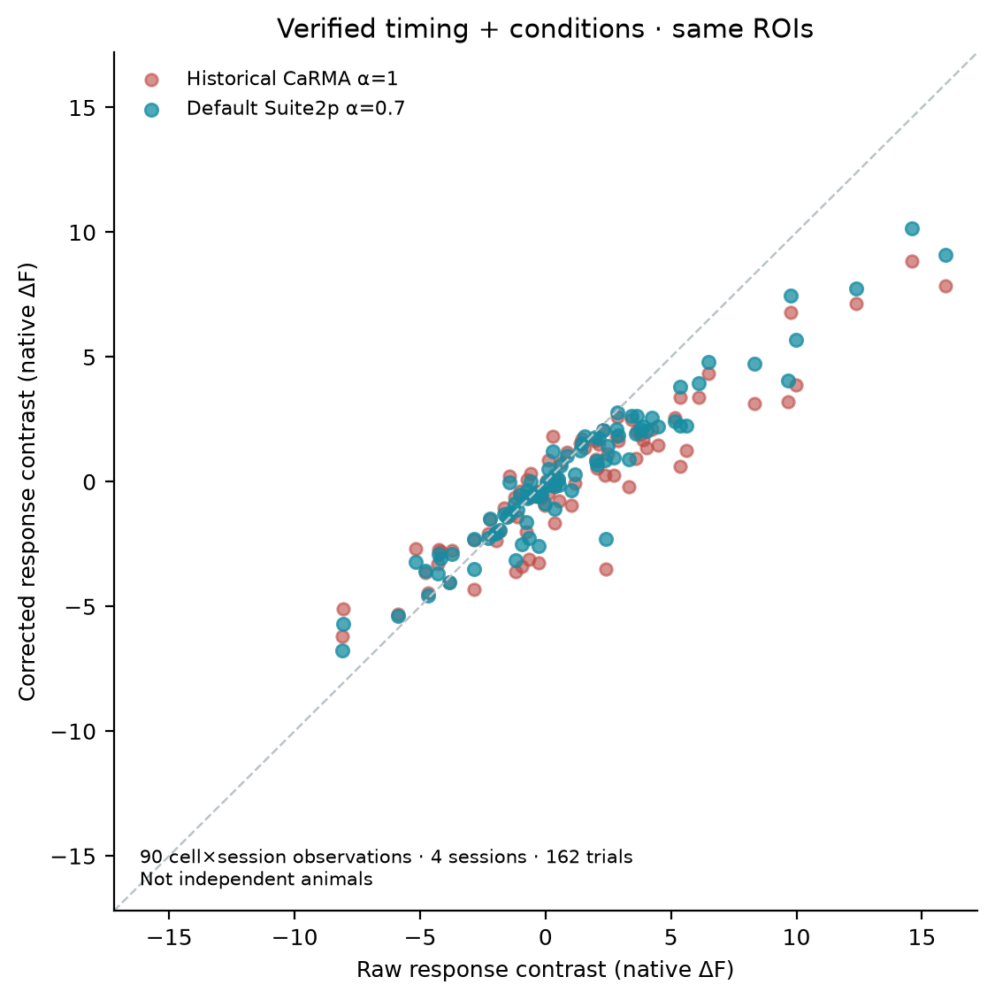

Default Suite2p-style 0.7 neuropil correction · full 2P cohort
21 sessions · 5 mice · 954 ROI×session rows · 1,150 original trials. All stored traces pass Fraw − 0.7 × Fneu = Fcorrected within floating-point representation. This is an extraction-method default, not proof of biological validity.
Only 4 sessions / 90 ROI×session rows / 162 trials have both verified condition labels and verified time axes for the 0–5 s baseline and 10–25 s descriptive contrast. The other sessions contribute unconditioned signal QC, not invented event effects. The cohort contains 5 mice, not 10; cell/session rows are not biological replicates. ANM112 D1 contains 812 nonfinite nominal-source values that are excluded rather than interpolated.
All-data checks






Each animal and session
Source and numerical tables
954 ROI rows CSV21-session CSV5-animal CSVValidation JSON
The ROI atlas uses the same raw-derived baseline noise scale for every extraction method, preventing a stronger subtraction from looking equally large merely through independent Z normalization. Original figures and old CaRMA outputs remain as explicit historical controls. The rest of the legacy biological figures have not been silently recast as newly computed α=0.7 results.